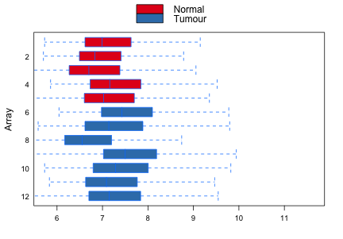
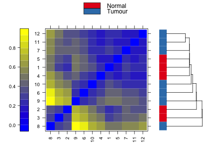
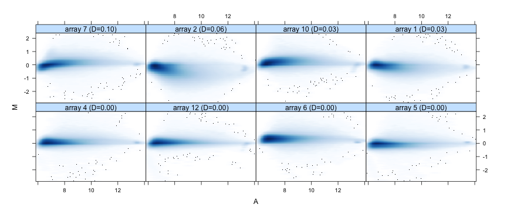
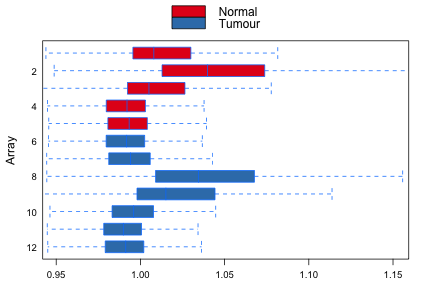

arrayQualityMetrics report for GSE3325
Section 2: Between array comparisonDistances between arrays
Section 3: Individual array qualityMA plots
Section 4: Affymetrix specific plotsRelative Log Expression (RLE)Normalized Unscaled Standard Error (NUSE)
- Array metadata and outlier detection overview
- Figure 1: Boxplots.

Figure 1 (PDF file) shows boxplots representing summaries of the signal intensity distributions of the arrays. Each box corresponds to one array. Typically, one expects the boxes to have similar positions and widths. If the distribution of an array is very different from the others, this may indicate an experimental problem. Outlier detection was performed by computing the Kolmogorov-Smirnov statistic
Ka between each array's distribution and the distribution of the pooled data.
 Figure 2 (PDF file)
Figure 2 (PDF file) shows a bar chart of the Kolmogorov-Smirnov statistic
Ka, the outlier detection criterion from the previous figure. The bars are shown in the original order of the arrays. Based on the distribution of the values across all arrays, a threshold of 0.48 was determined, which is indicated by the vertical line. None of the arrays exceeded the threshold and was considered an outlier.
- Figure 3: Distances between arrays.

Figure 3 (PDF file) shows a false color heatmap of the distances between arrays. The color scale is chosen to cover the range of distances encountered in the dataset. Patterns in this plot can indicate clustering of the arrays either because of intended biological or unintended experimental factors (batch effects). The distance
dab between two arrays
a and
b is computed as the mean absolute difference (L
1-distance) between the data of the arrays (using the data from all probes without filtering). In formula,
dab = mean |
Mai - Mbi |, where
Mai is the value of the
i-th probe on the
a-th array. Outlier detection was performed by looking for arrays for which the sum of the distances to all other arrays,
Sa = Σ
b dab was exceptionally large. No such arrays were detected.
 Figure 4 (PDF file)
Figure 4 (PDF file) shows a bar chart of the sum of distances to other arrays
Sa, the outlier detection criterion from the previous figure. The bars are shown in the original order of the arrays. Based on the distribution of the values across all arrays, a threshold of 7.42 was determined, which is indicated by the vertical line. None of the arrays exceeded the threshold and was considered an outlier.
- Figure 5: MA plots.

Figure 5 (PDF file) shows MA plots. M and A are defined as:
M = log
2(I
1) - log
2(I
2)
A = 1/2 (log
2(I
1)+log
2(I
2)),
where I
1 is the intensity of the array studied,and I
2 is the intensity of a "pseudo"-array that consists of the median across arrays. Typically, we expect the mass of the distribution in an MA plot to be concentrated along the M = 0 axis, and there should be no trend in M as a function of A. If there is a trend in the lower range of A, this often indicates that the arrays have different background intensities; this may be addressed by background correction. A trend in the upper range of A can indicate saturation of the measurements; in mild cases, this may be addressed by non-linear normalisation (e.g. quantile normalisation).
Outlier detection was performed by computing Hoeffding's statistic
Da on the joint distribution of A and M for each array. Shown are first the 4 arrays with the highest values of
Da, then the 4 arrays with the lowest values. The value of
Da is shown in the panel headings. 0 arrays had
Da>0.15 and were marked as outliers. For more information on Hoeffing's
D-statistic, please see the manual page of the function
hoeffd in the
Hmisc package.
 Figure 6 (PDF file)
Figure 6 (PDF file) shows a bar chart of the
Da, the outlier detection criterion from the previous figure. The bars are shown in the original order of the arrays. A threshold of 0.15 was used, which is indicated by the vertical line. None of the arrays exceeded the threshold and was considered an outlier.
- Figure 7: Relative Log Expression (RLE).
 Figure 7 (PDF file)
Figure 7 (PDF file) shows the
Relative Log Expression (RLE) plot. Arrays whose boxes are centered away from 0 and/or are more spread out are potentially problematic. Outlier detection was performed by computing the Kolmogorov-Smirnov statistic
Ra between each array's RLE values and the pooled, overall distribution of RLE values.
+ Figure 8: Outlier detection for Relative Log Expression (RLE).
 Figure 8 (PDF file)
Figure 8 (PDF file) shows a bar chart of the Kolmogorov-Smirnov statistic
Ra of the RLE values, the outlier detection criterion from the previous figure. The bars are shown in the original order of the arrays. Based on the distribution of the values across all arrays, a threshold of 0.182 was determined, which is indicated by the vertical line. One array exceeded the threshold and was considered an outlier.
- Figure 9: Normalized Unscaled Standard Error (NUSE).

Figure 9 (PDF file) shows the
Normalized Unscaled Standard Error (NUSE) plot. For each array, the boxes should be centered around 1. An array were the values are elevated relative to the other arrays is typically of lower quality. Outlier detection was performed by computing the 75% quantile
Na of each array's NUSE values and looking for arrays with large
Na.
 Figure 10 (PDF file)
Figure 10 (PDF file) shows a bar chart of the
Na, the outlier detection criterion from the previous figure. The bars are shown in the original order of the arrays. Based on the distribution of the values across all arrays, a threshold of 1.09 was determined, which is indicated by the vertical line. None of the arrays exceeded the threshold and was considered an outlier.
This report has been created with arrayQualityMetrics 3.28.2 under R version 3.3.1 (2016-06-21).
(Page generated on Thu Aug 4 18:44:10 2016 by hwriter )